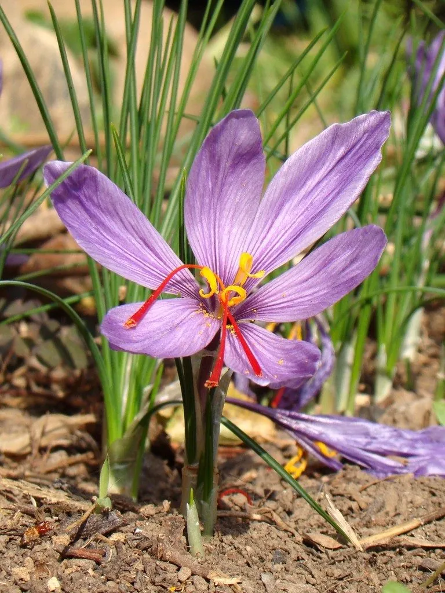

花卉与草本 · 植物界
番红花 Crocus sativus

鸢尾科多年生球根花卉，秋季开淡紫色六瓣花，花柱可制名贵香料藏红花，是药食兼用的重要经济植物。
- 分类
- 门被子植物门纲木兰纲目天门冬目科鸢尾科属番红花属
- 栖息环境
- 地中海气候的向阳坡地，喜凉爽湿润
- 地理分布
- 原产地中海沿岸至伊朗；中国上海、浙江、江苏等地引种
- 保护级别
- 暂无评估；为栽培起源的三倍体，未见野生居群
物种志
番红花为鸢尾科番红花属多年生球根草本，株高 10–20 厘米，地下具球形球茎。叶片线形，基生，中间具白色纵纹。花 1–3 朵自叶丛抽出，花冠淡紫色，花被片 6 枚，喉部具毛，花柱细长、顶端三裂，深红色，花期 10–11 月；果实为蒴果。
番红花原产地中海沿岸至伊朗一带，中国上海、浙江、江苏等地引种栽培。它喜凉爽湿润、阳光充足的环境，秋季开花，夏季休眠，适宜疏松肥沃、排水良好的沙质土壤。花柱与柱头可制名贵香料藏红花，也可入药，有活血化瘀、凉血解毒之效；因每朵花仅产 3 根花柱，需大量人工采收，价格昂贵。栽培以分球繁殖为主，球茎需在夏季休眠期保持干燥。
形态与习性
- 株高10–20 厘米，球茎球形
- 花期10–11 月，花淡紫色
- 果期花后结蒴果
- 光照喜阳光充足
- 水分喜湿润，夏季休眠期忌水
- 土壤疏松肥沃、排水良好的沙质土
- 主要用途藏红花香料、药用与观赏
趣味知识
- 藏红花是番红花的花柱，每朵花只有 3 根，需人工逐朵采摘。
- 番红花是秋季开花，与其他春季开花的球根花卉不同。
- 它原产地中海沿岸，中国上海、浙江等地已有规模化种植。
- 藏红花既是香料也是药材，用量不宜过大。